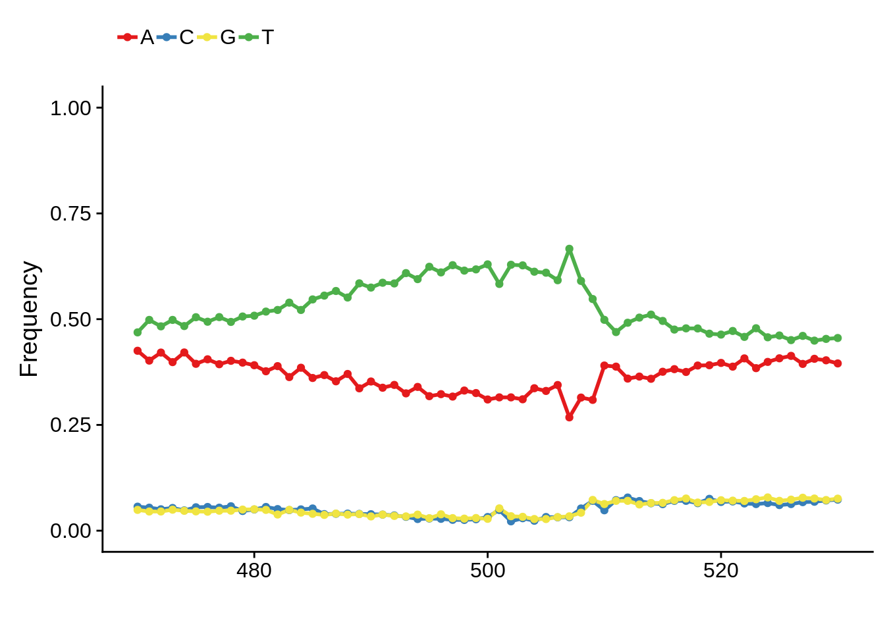

Promoter Architecture
Philipp Ross
03-31-2017
Last updated: 2017-04-04
Code version: 0e2e80a
Sequence features surrounding transcription start sites
For this analysis we want to plot nucleotide frequencies up and downstream of predicted transcription start sites. We can do this by looking at tag clusters, promoter clusters, or most heavily used TSSs defined earlier.
# import genome
library(BSgenome.Pfalciparum.PlasmoDB.v24)
# import tag clusters
tc_intergenic <- rtracklayer::import.gff3("../output/ctss_clustering/modified/tag_clusters_annotated_intergenic.gff")
tc_exonic <- rtracklayer::import.gff3("../output/ctss_clustering/modified/tag_clusters_annotated_exons.gff")
tc_intronic <- rtracklayer::import.gff3("../output/ctss_clustering/modified/tag_clusters_annotated_introns.gff")
# import promoter clusters
pc_intergenic <- rtracklayer::import.gff3("../output/ctss_clustering/modified/promoter_clusters_annotated_intergenic.gff")
pc_exonic <- rtracklayer::import.gff3("../output/ctss_clustering/modified/promoter_clusters_annotated_exons.gff")
pc_intronic <- rtracklayer::import.gff3("../output/ctss_clustering/modified/promoter_clusters_annotated_introns.gff")
# import most heavily used TSSs
x3d7_tss <- rtracklayer::import.gff3("../output/final_utrs/final_utrs_3d7.gff") %>%
tibble::as_tibble() %>%
dplyr::mutate(end=start+499,start=start-499) %>%
dplyr::filter(type=="5UTR") %>%
GenomicRanges::GRanges()
# import most heavily used TSSs
xhb3_tss <- rtracklayer::import.gff3("../output/final_utrs/final_utrs_hb3.gff") %>%
tibble::as_tibble() %>%
dplyr::mutate(end=start+499,start=start-499) %>%
dplyr::filter(type=="5UTR") %>%
GenomicRanges::GRanges()
# import most heavily used TSSs
xit_tss <- rtracklayer::import.gff3("../output/final_utrs/final_utrs_it.gff") %>%
tibble::as_tibble() %>%
dplyr::mutate(end=start+499,start=start-499) %>%
dplyr::filter(type=="5UTR") %>%
GenomicRanges::GRanges()Let’s set the nucleotide colors to be what we want them to be:
# set colors
set_colors <- function(colors, vars, iname) {
myColors <- c(colors)
names(myColors) <- levels(vars)
output <- scale_colour_manual(name = iname, values = myColors)
return(output)
}
# custom nucleotide colors
base_colors <- set_colors(c("#E41A1C", "#377EB8", "#F0E442", "#4DAF4A"),
c("A", "T", "C", "G"), "base")Now let’s write the functions to generate the frequency diagrams, information content, and sequence logos:
# Use this function to filter tag clusters
filter_tag_clusters <- function(tcs,tpm_threshold) {
ftcs <- tcs %>%
tibble::as_tibble() %>%
dplyr::filter(as.numeric(tpm.dominant_ctss)>=tpm_threshold) %>%
dplyr::select(seqnames,dominant_ctss,strand,name) %>%
dplyr::mutate(start=as.numeric(dominant_ctss)-499,end=as.numeric(dominant_ctss)+499) %>%
GenomicRanges::GRanges()
return(ftcs)
}
# Use this function to filter promoter clusters
filter_promoter_clusters <- function(pcs,tpm_threshold) {
fpcs <- pcs %>%
tibble::as_tibble() %>%
dplyr::group_by(seqnames,start,strand,full_end,name) %>%
dplyr::summarise(tpm=sum(as.numeric(tpm)),dominant_ctss=max(dominant_ctss)) %>%
dplyr::filter(tpm >= tpm_threshold) %>%
dplyr::ungroup() %>%
dplyr::rename(end=full_end) %>%
dplyr::mutate(end=as.numeric(end)) %>%
dplyr::mutate(start=as.numeric(dominant_ctss)-499,end=as.numeric(dominant_ctss)+499) %>%
GenomicRanges::GRanges()
return(fpcs)
}
# Use this function to generate position weight matrices
generate_pwm <- function(clusters) {
# extract sequences from the genome
seqs <- BSgenome::getSeq(BSgenome.Pfalciparum.PlasmoDB.v24,clusters)
# convert those sequences into a data frame
tmp <- lapply(seqs,function(x) str_split(as.character(x),"")[[1]])
tmp <- as.data.frame(tmp)
colnames(tmp) <- 1:ncol(tmp)
tmp$pos <- 1:nrow(tmp)
tmp <- tmp %>% gather(seq, base, -pos)
# calculate the proportion of nucleotides at each position
pwm <- tmp %>%
group_by(as.numeric(pos)) %>%
summarise(A = sum(base == "A")/n(),
C = sum(base == "C")/n(),
G = sum(base == "G")/n(),
T = sum(base == "T")/n()) %>%
ungroup()
colnames(pwm)[1] <- "pos"
return(pwm)
}
# Plot the nucleotide frequencies at each position
plot_frequencies <- function(ipwm) {
ipwm %>%
gather(base, freq, -pos) %>%
ggplot(aes(x = pos, y = freq, color = base)) +
geom_line(size = 1) +
geom_point(size = 1.5) +
scale_y_continuous(limits = c(0,1.0)) +
theme(legend.position="top",
legend.direction="horizontal",
legend.title = element_blank()) +
base_colors
}
# Plot the sequence logo
plot_logo <- function(ipwm) {
logo <- ipwm[,2:5]
seqLogo::seqLogo(seqLogo::makePWM((t(logo[480:520,]))), ic.scale = T)
}
# Plot the information content at each position
plot_info <- function(ipwm) {
ipwm %>%
mutate(i = (A * log2(A/0.42)) + (T * log2(T/0.45)) + (G * log2(G/0.07)) + (C * log2(C/0.06))) %>%
gather(base, freq, -pos, -i) %>%
ggplot(aes(x = pos, y = i)) +
geom_line()
}Most commonly used 5’ TSS
Now let’s look at these plots for each of our data sets. First we will look at the most commonly used TSSs for each strain:
3D7
x3d7pwm <- generate_pwm(x3d7_tss)
plot_frequencies(x3d7pwm)
plot_info(x3d7pwm)
plot_logo(x3d7pwm)
HB3
xhb3pwm <- generate_pwm(xhb3_tss)
plot_frequencies(xhb3pwm)
plot_info(xhb3pwm)plot_logo(xhb3pwm)IT
xitpwm <- generate_pwm(xit_tss)
plot_frequencies(xitpwm)
plot_info(xitpwm)
plot_logo(xitpwm)Tag clusters
Intergenic
ftcs <- filter_tag_clusters(tc_intergenic,5)
tcipwm <- generate_pwm(ftcs)
plot_frequencies(tcipwm)plot_info(tcipwm)
plot_logo(tcipwm)Exonic
ftcs <- filter_tag_clusters(tc_exonic,5)
tcepwm <- generate_pwm(ftcs)
plot_frequencies(tcepwm)
plot_info(tcepwm)plot_logo(tcepwm)Intronic
ftcs <- filter_tag_clusters(tc_intronic,5)
tcinpwm <- generate_pwm(ftcs)
plot_frequencies(tcinpwm)
plot_info(tcinpwm)plot_logo(tcinpwm)
Promoter clusters
Intergenic
fpcs <- filter_promoter_clusters(pc_intergenic,5)
pcipwm <- generate_pwm(fpcs)
plot_frequencies(pcipwm)
plot_info(pcipwm)
plot_logo(pcipwm)Exonic
fpcs <- filter_promoter_clusters(pc_exonic,5)
pcepwm <- generate_pwm(fpcs)
plot_frequencies(pcepwm)
plot_info(pcepwm)
plot_logo(pcepwm)
Intronic
fpcs <- filter_promoter_clusters(pc_intronic,5)
pcinpwm <- generate_pwm(fpcs)
plot_frequencies(pcinpwm)
plot_info(pcinpwm)
plot_logo(pcinpwm)
Sequence features of sharp and broad promoters
In order to determine whether sharp and broad promoters are of significantly different nucleotide compositions, we first need to divide them up into sharp and broad promoters, then generate random sequences of similar length distributions, and compare the nucleotide content of the actual promoters to those of the randomly generated ones.
First let’s create random intergenic sequences:
# filter by total TPM
filter_clusters <- function(pcs,threshold) {
# remove duplicates, add up total TPM, filter by threshold
fpcs <- tibble::as_tibble(pcs) %>%
dplyr::group_by(seqnames,start,strand,full_end,name) %>%
dplyr::summarise(tpm=sum(as.numeric(tpm)),dominant_ctss=max(dominant_ctss)) %>%
dplyr::filter(tpm >= threshold) %>%
dplyr::ungroup() %>%
dplyr::rename(end=full_end) %>%
dplyr::mutate(end=as.numeric(end))
return(fpcs)
}
# split by an arbitrary width and extract broad and sharp sequences
extract_cluster_seqs <- function(pcs, width) {
# split them by promoter width
broad_pcs <- GenomicRanges::GRanges(filter(pcs, end-start >= width))
sharp_pcs <- GenomicRanges::GRanges(filter(pcs, end-start < width))
# retrieve the sequences
broad_seqs <- BSgenome::getSeq(BSgenome.Pfalciparum.PlasmoDB.v24,broad_pcs)
sharp_seqs <- BSgenome::getSeq(BSgenome.Pfalciparum.PlasmoDB.v24,sharp_pcs)
return(list(broad=broad_seqs,sharp=sharp_seqs))
}
# create random seqs to compare to
extract_random_seqs <- function(seqs,widths) {
# start with the first sequence,
# filter by width to avoid errors,
# sample randomly from filtered sequences,
# grab random interval that matches the length of the
# promoter sequence
fseqs <- seqs[width(seqs) > widths[1]]
rsample <- sample(1:length(fseqs),size=1)
rseq <- fseqs[rsample][[1]]
rstart <- sample(x=1:(length(rseq)-widths[1]),size=1)
random_seqs <- rseq[rstart:(rstart+widths[1]-1)]
# do this for all sequences
for (i in 2:length(widths)) {
fseqs <- seqs[width(seqs) > widths[i]]
rsample <- sample(1:length(fseqs),size=1)
rseq <- fseqs[rsample][[1]]
rstart <- sample(x=1:(length(rseq)-widths[i]-1),size=1)
random_seqs <- unlist(Biostrings::DNAStringSetList(
Biostrings::DNAStringSet(random_seqs),
Biostrings::DNAStringSet(rseq[rstart:(rstart+widths[i]-1)])))
}
return(random_seqs)
}
# calculate promoter cluster nucleotide frequencies
# and normalize by random cluster frequences
normalize_frequencies <- function(cluster_seqs,random_seqs) {
# calculate nucleotide frequencies for broad promoters
clengths <- BSgenome::width(cluster_seqs$broad)
cfreqs <- BSgenome::oligonucleotideFrequency(x=cluster_seqs$broad,width=1,step=1,as.prob=TRUE)
rlengths <- BSgenome::width(random_seqs$broad)
rfreqs <- BSgenome::oligonucleotideFrequency(x=random_seqs$broad,width=1,step=1,as.prob=TRUE)
broad_tibble <- tibble::tibble(length=clengths,
AT=(cfreqs[,1]+cfreqs[,4])/ifelse((rfreqs[,1]+rfreqs[,4])>0,(rfreqs[,1]+rfreqs[,4]),0.01),
GC=(cfreqs[,2]+cfreqs[,3])/ifelse((rfreqs[,2]+rfreqs[,3])>0,(rfreqs[,1]+rfreqs[,4]),0.01),
shape="broad") %>%
dplyr::select(AT,GC,shape)
# for sharp promoters
clengths <- BSgenome::width(cluster_seqs$sharp)
cfreqs <- BSgenome::oligonucleotideFrequency(x=cluster_seqs$sharp,width=1,step=1,as.prob=TRUE)
rlengths <- BSgenome::width(random_seqs$sharp)
rfreqs <- BSgenome::oligonucleotideFrequency(x=random_seqs$sharp,width=1,step=1,as.prob=TRUE)
sharp_tibble <- tibble::tibble(length=clengths,
AT=(cfreqs[,1]+cfreqs[,4])/ifelse((rfreqs[,1]+rfreqs[,4])>0,(rfreqs[,1]+rfreqs[,4]),0.01),
GC=(cfreqs[,2]+cfreqs[,3])/ifelse((rfreqs[,2]+rfreqs[,3])>0,(rfreqs[,1]+rfreqs[,4]),0.01),
shape="sharp") %>%
dplyr::select(AT,GC,shape)
# combine into one tibble
shape_tibble <- dplyr::bind_rows(broad_tibble,sharp_tibble)
return(shape_tibble)
}
# calculate promoter cluster nucleotide frequencies
calculate_frequencies <- function(cluster_seqs,random_seqs) {
# calculate nucleotide frequencies for broad promoters
clengths <- BSgenome::width(cluster_seqs$broad)
cfreqs <- BSgenome::oligonucleotideFrequency(x=cluster_seqs$broad,width=1,step=1,as.prob=TRUE)
broad_tibble <- tibble::tibble(length=clengths,
AT=(cfreqs[,1]+cfreqs[,4]),
GC=(cfreqs[,2]+cfreqs[,3]),
shape="broad") %>%
dplyr::select(AT,GC,shape)
# for sharp promoters
clengths <- BSgenome::width(cluster_seqs$sharp)
cfreqs <- BSgenome::oligonucleotideFrequency(x=cluster_seqs$sharp,width=1,step=1,as.prob=TRUE)
sharp_tibble <- tibble::tibble(length=clengths,
AT=(cfreqs[,1]+cfreqs[,4]),
GC=(cfreqs[,2]+cfreqs[,3]),
shape="sharp") %>%
dplyr::select(AT,GC,shape)
# combine into one tibble
shape_tibble <- dplyr::bind_rows(broad_tibble,sharp_tibble)
return(shape_tibble)
}
# generate shape nucleotide frequency
generate_shape_frequencies <- function(pcs,seqs,filter_threshold,split_width,freq_fun) {
# filter by TPM threshold
fpcs <- filter_clusters(pcs,filter_threshold)
# split by arbitrary width
cluster_seqs <- extract_cluster_seqs(fpcs,split_width)
# generate random promoter clusters of similar widths
random_seqs <- list(broad=extract_random_seqs(seqs=seqs,widths=width(cluster_seqs$broad)),
sharp=extract_random_seqs(seqs=seqs,widths=width(cluster_seqs$sharp))
)
# normalize by nucleotide frequencies of random sequences
shape_tibble <- do.call(freq_fun,list(cluster_seqs=cluster_seqs,random_seqs=list(broad=random_seqs$broad,sharp=random_seqs$sharp)))
return(shape_tibble)
}First we can look at the nucleotide composition for intergenic promoters:
# first we can do this for intergenic sequences
genes <- rtracklayer::import.gff3("../data/annotations/genes_nuclear_3D7_v24.gff")
telomeres <- rtracklayer::import.gff3("../data/annotations/Pf3D7_v3_subtelomeres.gff")
intergenic <- GenomicRanges::gaps(genes)
intergenic <- intergenic[is.na(GenomicRanges::findOverlaps(intergenic,telomeres,select="arbitrary"))]
intergenic_seqs <- BSgenome::getSeq(BSgenome.Pfalciparum.PlasmoDB.v24,intergenic)Now we’ll generate the frequencies without normalization:
shape_tibble <- generate_shape_frequencies(pcs=pc_intergenic,
seqs=intergenic_seqs,
filter_threshold=5,
split_width=15,
freq_fun=calculate_frequencies)
write_tsv(x=shape_tibble,path="../output/promoter_architecture/shape_frequencies.tsv")But we’ll also generate them within normalization and repeat the random sampling 100 times:
normalized_shape_tibble <- generate_shape_frequencies(pcs=pc_intergenic,
seqs=intergenic_seqs,
filter_threshold=5,
split_width=15,
freq_fun=normalize_frequencies)
shapes <- normalized_shape_tibble$shape
normalized_shape_tibble$shape <- NULL
colnames(normalized_shape_tibble) <- c("AT1","GC1")
for (i in 2:100) {
tmp <- generate_shape_frequencies(pcs=pc_intergenic,
seqs=intergenic_seqs,
filter_threshold=5,
split_width=15,
freq_fun=normalize_frequencies)
tmp$shape <- NULL
colnames(tmp) <- c(paste0("AT",i),paste0("GC",i))
normalized_shape_tibble <- dplyr::bind_cols(normalized_shape_tibble,tmp)
}
AT <- select(normalized_shape_tibble,contains("AT"))
mAT <- rowMeans(AT)
GC <- select(normalized_shape_tibble,contains("GC"))
mGC <- rowMeans(GC)
normalized_shape_tibble <- tibble::tibble(shape=shapes,AT=mAT,GC=mGC)
write_tsv(x=normalized_shape_tibble,path="../output/promoter_architecture/normalized_shape_frequencies.tsv")Now we can look at some plots of the frequencies:
# plot nucleotide frequencies
shape_tibble %>% ggplot(aes(x=shape,y=GC)) + geom_boxplot()
normalized_shape_tibble %>% ggplot(aes(x=shape,y=GC)) + geom_boxplot()
Session Information
sessionInfo()R version 3.3.2 (2016-10-31)
Platform: x86_64-apple-darwin15.6.0 (64-bit)
Running under: OS X El Capitan 10.11.6
locale:
[1] en_US.UTF-8/en_US.UTF-8/en_US.UTF-8/C/en_US.UTF-8/en_US.UTF-8
attached base packages:
[1] stats4 parallel stats graphics grDevices utils datasets
[8] methods base
other attached packages:
[1] BSgenome.Pfalciparum.PlasmoDB.v24_1.0
[2] BSgenome_1.42.0
[3] rtracklayer_1.34.2
[4] Biostrings_2.42.1
[5] XVector_0.14.0
[6] GenomicRanges_1.26.3
[7] GenomeInfoDb_1.10.3
[8] IRanges_2.8.1
[9] S4Vectors_0.12.1
[10] BiocGenerics_0.20.0
[11] scales_0.4.1
[12] cowplot_0.7.0
[13] magrittr_1.5
[14] stringr_1.2.0
[15] dplyr_0.5.0
[16] purrr_0.2.2
[17] readr_1.0.0
[18] tidyr_0.6.1
[19] tibble_1.2
[20] ggplot2_2.2.1
[21] tidyverse_1.1.1
loaded via a namespace (and not attached):
[1] Rcpp_0.12.9 lubridate_1.6.0
[3] lattice_0.20-34 Rsamtools_1.26.1
[5] assertthat_0.1 rprojroot_1.2
[7] digest_0.6.12 psych_1.6.12
[9] R6_2.2.0 plyr_1.8.4
[11] backports_1.0.5 evaluate_0.10
[13] httr_1.2.1 zlibbioc_1.20.0
[15] lazyeval_0.2.0 readxl_0.1.1
[17] Matrix_1.2-8 rmarkdown_1.3
[19] labeling_0.3 BiocParallel_1.8.1
[21] foreign_0.8-67 RCurl_1.95-4.8
[23] munsell_0.4.3 broom_0.4.2
[25] modelr_0.1.0 seqLogo_1.34.0
[27] mnormt_1.5-5 htmltools_0.3.5
[29] SummarizedExperiment_1.4.0 workflowr_0.3.0
[31] XML_3.98-1.5 GenomicAlignments_1.10.0
[33] bitops_1.0-6 grid_3.3.2
[35] nlme_3.1-131 jsonlite_1.3
[37] gtable_0.2.0 DBI_0.5-1
[39] git2r_0.18.0 stringi_1.1.2
[41] reshape2_1.4.2 xml2_1.1.1
[43] tools_3.3.2 forcats_0.2.0
[45] Biobase_2.34.0 hms_0.3
[47] yaml_2.1.14 colorspace_1.3-2
[49] rvest_0.3.2 knitr_1.15.1
[51] haven_1.0.0 This R Markdown site was created with workflowr